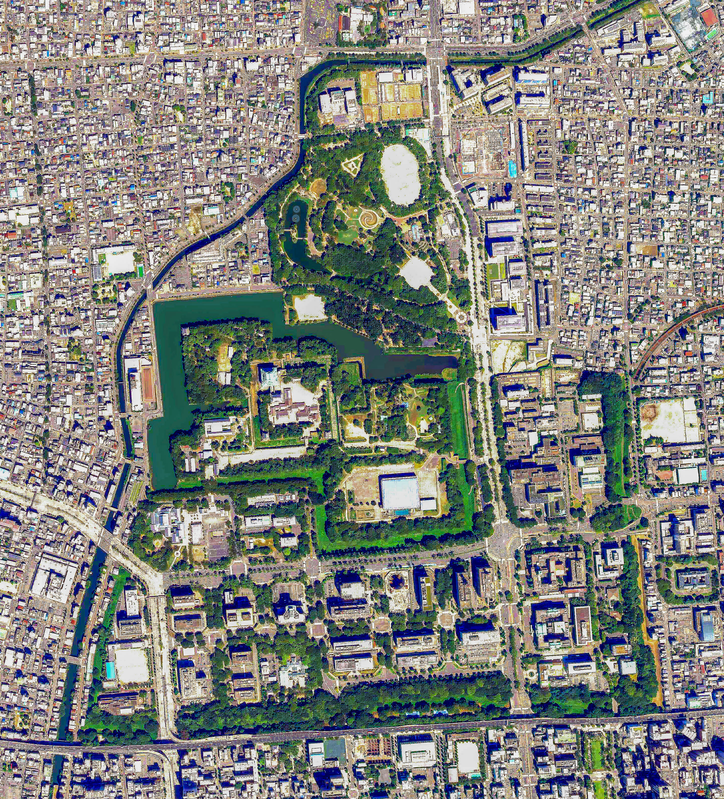
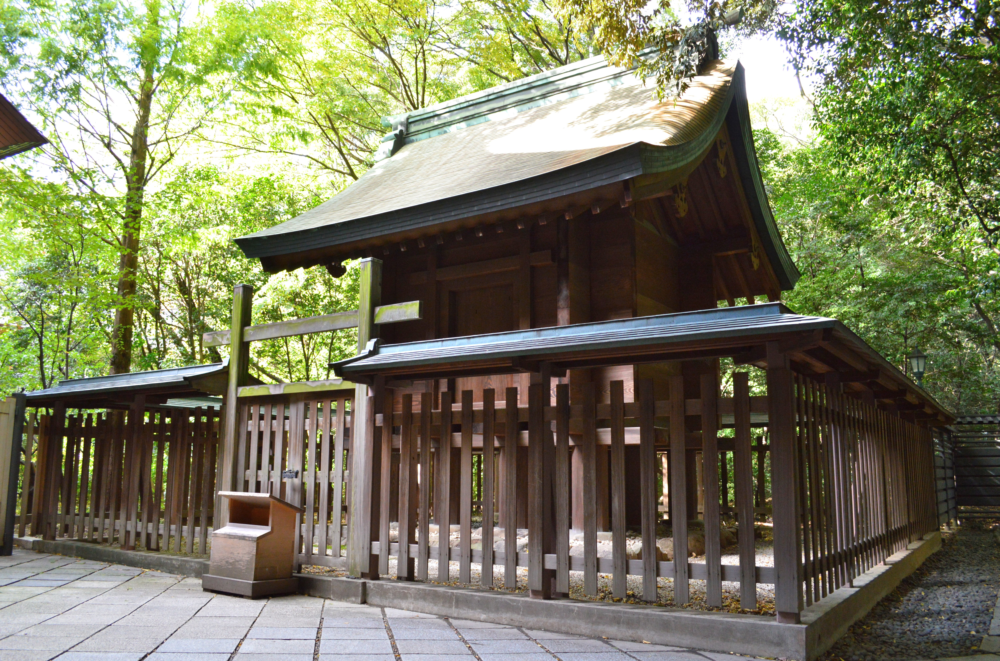
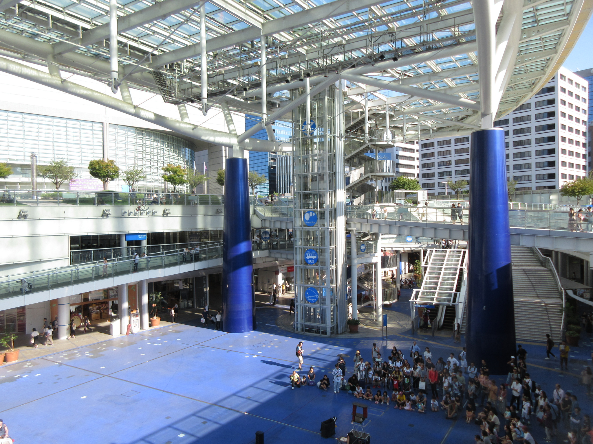
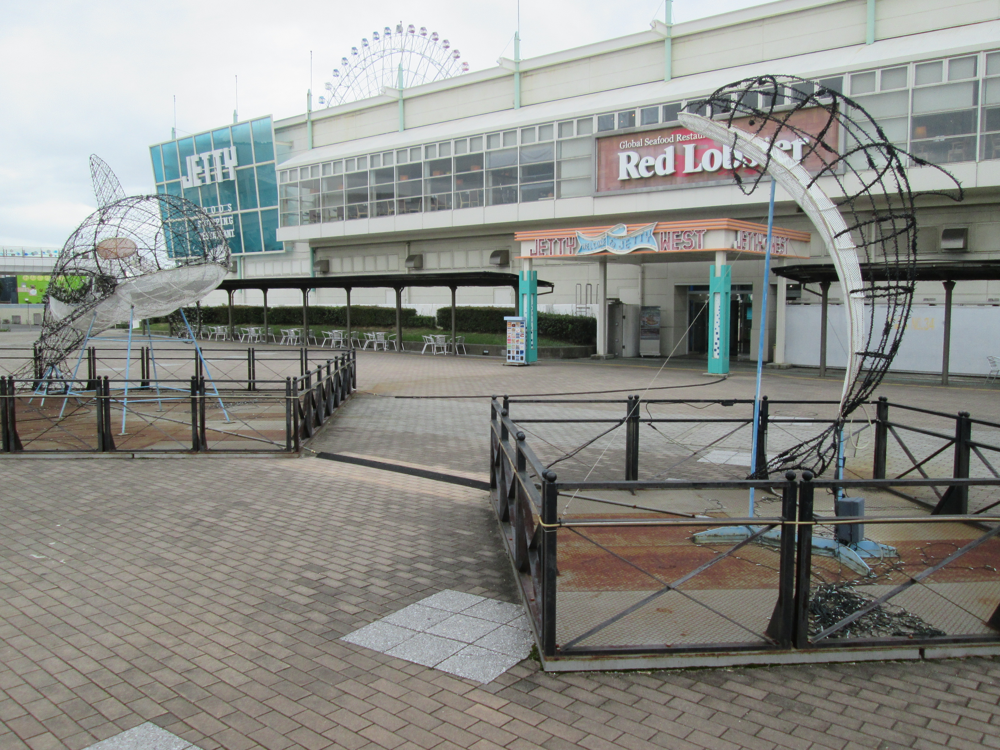
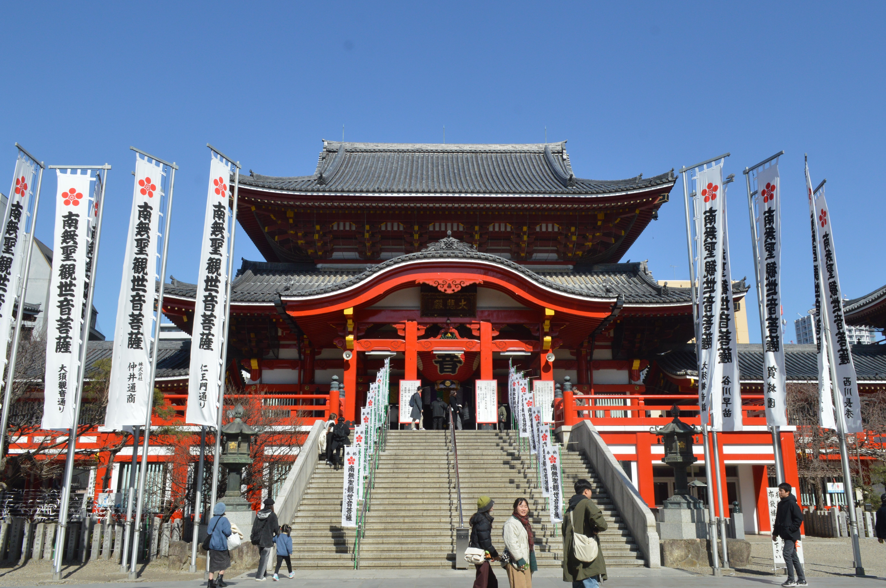

Scroll
名古屋位於東京與京都之間，是日本中部最大的都市。這裡有400年歷史的古城、千年神社， 也有最前衛的建築與科技。傳統與創新在這裡和諧共存。
從雄偉的古城到寧靜的神宮，從未來感的玻璃建築到海洋深處的奇幻世界——
名古屋的每一處風景，都在訴說不同的故事。

Featured德川家康親自下令建造的權力象徵，與大阪城、熊本城並列日本三大名城。 金色鯱魚佇立屋脊，春季櫻花環繞護城河，歷史的重量在此凝結，卻也煥發新生。

神社逾1900年歷史的日本最古老神宮之一，供奉傳說中的草雉劍， 境內古木參天，莊嚴肅穆的氛圍令人不自覺放慢腳步。

現代地標「水與光的漂浮花園」——橢圓形玻璃屋頂佇立半空， 夜間夢幻燈光秀宛如銀河降臨人間，是名古屋夜生活的首選之地。

水族館日本規模最大的水族館之一，從35億年海洋演化到南極探險， 壓軸海豚表演跳躍旋轉，親子同遊的最佳去處。

寺院創建於1333年的古剎，供奉日本三大觀音之一。 新年參拜30萬人，寺外1200家商店雲集，是香火與街頭時尚交匯的神奇之地。
從百年老舖的鰻魚飯到街頭人氣味噌豬排——
名古屋的靈魂，藏在每一道料理裡。